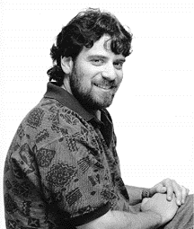
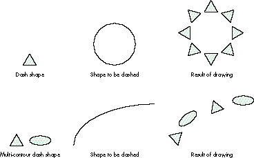
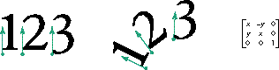
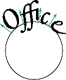
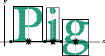
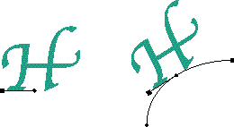
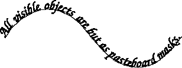
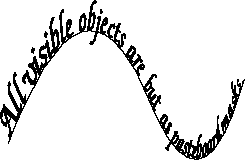
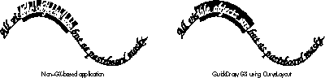

Many high-end drawing applications provide the user with a way to
draw text along an arbitrary path. Some of them even provide the
means to edit this text in place. The methods discussed here will
illustrate how to do both in a QuickDraw GX-based application. In
fact, I'll show you how QuickDraw GX enables your application to
provide better line layout capabilities than those currently
available in mainstream graphics arts applications.
One of the things that makes QuickDraw GX interesting is its amazing typography --
whatever else has been said about GX, its type capabilities are universally
acknowledged as the best. Besides aesthetics, a distinguishing attribute of QuickDraw
GX typography is not what is graphically possible, but the ease with which visual
content can be created. A user can create documents that are kerned or tracked or have
swashes, ligatures, and so on without QuickDraw GX, but achieving these effects
requires a great deal of manual labor, with lots of Shift-Option-Command key
combinations and switching to special fonts -- assuming the developer has made the
effort to provide such a level of functionality. With QuickDraw GX, these effects are
features designed into the font itself, so all the user needs to do is type and the text
comes out beautifully. For different effects, the user just picks font features from a
dialog or palette. The time saved by the user can be 90% over a non-GX interface! It
simply has to be experienced to be appreciated.
All of this great typography is easy for the user to use because it's easy for the
developer to implement. How many pre-GX drawing and illustration packages support
the same level of typographic quality as their pre-GX publishing package
counterparts? Not many, and of those that do, how much more memory do those
applications require than they would without the typography code? Thanks to
QuickDraw GX, we're beginning to see drawing and illustration programs that
incorporate high-end typographic features and page layout programs that incorporate
high-end graphics features -- all with lower overall memory requirements (when
compared with traditional non-GX applications) because the code is in the system and
is shared between applications.
Let me get to the real topic of this article. A favorite feature in illustration and page
layout programs is to enable the user to lay a line of text along an arbitrary path, be it
straight or curved. My goal here is to provide the developer with a way to do this,
using QuickDraw GX, that's familiar to those who have been using GX and enticing to
those who haven't tried it yet. If you've written code to handle text on a path in a
non-GX application, consider the amount of code needed to do the editing on the screen
and the amount of code you had to write to make it print on a PostScript printer. Then
compare it to what's presented here -- I think the QuickDraw GX advantage will be
clear!
I'll assume you have some knowledge of typography and a working knowledge of
QuickDraw GX throughout my discussion. If you need to brush up on GX, there are the
Inside Macintosh: QuickDraw GX books; the Programmer's Overview andTypography
volumes are most relevant here.
Accompanying this article on this issue's CD and develop's Web site is a library of code
called CurveLayout which very closely parallels the QuickDraw GX line layout
mechanism but with support for curved layouts. The functions of this library will be
described later.
It turns out that QuickDraw GX provides an extremely simple method for drawing text
along a curve, since it lets us make any shape a dash outline for any other shape -- to
dash a shape means to draw another shape in a repeating pattern along the perimeter of
the first shape (see Figure 1). The PostScript language, by comparison, allow only
simple dashing.

Figure 1. Dashing a shape
Since QuickDraw GX text is a shape, you can draw text along a path by using dashing, as
shown in Listing 1.
______________________________
Listing 1. Drawing text on a curve using dashing
void PutTextOnCurve(gxShape myPath)
{
gxDashRecord aDash;
gxShape textShape = GXNewText(5, "Hello", nil);
// Call primitive shape to convert text to glyph.
GXPrimitiveShape(textShape); // All dashes must be primitive.
aDash.dash = textShape;
aDash.attributes = gxBreakDash;// Dash each letter separately.
aDash.advance = 0; // 0 advance means single repeat.
GXSetShapeDash(myPath, &aDash);
GXDisposeShape(textShape); // Dash is now sole owner of it.
GXSetShapeFill(myPath, gxFrameFill);
// Dash only for framed shapes.
} // PutTextOnCurve
______________________________
Listing 1 demonstrates just how simple it can be to put text on a path in QuickDraw GX.
This method would also work with layout shapes in addition to text shapes (although
there's a bug in GX 1.1.3 and earlier that may cause a crash if you do try to dash with a
layout). While dashing may be a simple interface for drawing text along a curve, it
isn't an efficient solution for editing because of the overhead incurred by constantly
rebuilding the dash every time the text changes. Additionally, the dashing solution puts
you at the mercy of the algorithms used for dashing -- they weren't specifically
designed for text or layout manipulation.
The CurveLayout library discussed here provides the illusion of a new shape type for
QuickDraw GX which I affectionately call the "curve layout." I wanted to continue the
object-oriented philosophy of GX by providing an API for drawing and editing text
along a curved path. The idea is to provide an efficient mechanism for adding curve
layouts to your application without forcing you to learn too much new stuff. While the
article will go into great detail concerning the algorithms used, you need not
understand them to incorporate curve layouts into your application using the
CurveLayout library.
THE GLYPH SHAPE
Before we go too much further, it's worth discussing some things about our friend the
glyph shape. There are three different kinds of shapes for drawing text: the text shape,
the glyph shape, and the layout shape. Text shapes are the most familiar to those of us
who have used QuickDraw or PostScript. When a text shape is drawn, its appearance is
the same as the result of the DrawString call in QuickDraw or the show operator in
PostScript: simply the text itself.
The relationship between glyph and layout shapes can be compared to programming.
The layout shape is like a high-level language such as LISP -- a very high-level,
powerful way of drawing text that produces beautiful results, but it makes specific
manipulations difficult. The glyph shape is more like assembly language -- you can
control every aspect of how the text draws, but even simple things require a good deal
of programming effort. Nevertheless, it's the direct control possible with the glyph
shape that enabled me to write CurveLayout.
A glyph shape allows the specification of individual positions and tangent vectors (and
even typographic style) of every typographic element drawn in a shape.
Figure 2 illustrates the power of the glyph shape for our purposes. At left is a typical
straight piece of text. The arrows represent the tangent vectors stored in the glyph
shape and the dots at the ends of the arrow lines show the positions. (Note that both
here and in Figure 3, the tangent vectors are drawn as normals -- rotated 90 degrees
counterclockwise from their actual positions -- since otherwise they would run
together and make a mess of the figures.) Beside that is the same text with different
tangents and positions showing how these attributes might be manipulated to draw text
along a path. The tangent vector specifies the scale and rotation of the glyph and is
stored in the glyph shape as a point. The x and y values of this point are used to
construct the mapping shown at the right in the figure. This mapping is applied to the
glyph to reposition it as desired.

Figure 2. Glyph shape tangents, positions, and mapping matrix
But wait -- while glyph shapes give us the control we need to flow our glyphs along a
path (by setting positions and tangents for each glyph in the shape), they're still like
assembly language, and we don't want to position every glyph ourselves if we don't need
to. The good news is that QuickDraw GX provides a "compiler" to convert layout shapes
to glyph shapes, so we can use the high-level language (layout shape) instead. Our
compiler is the routine GXPrimitiveShape, which allows us to deal mostly in the
beautiful world of layouts and then convert them into glyph shapes that can have their
positions and tangents modified to flow along a path. Layout shapes also provide us with
the high-level abilities required for interactive editing (more on this later).
Now we've seen how we can convert a line layout shape into a glyph shape, and how the
glyph shape can have its positions and tangents modified so that the glyphs draw along a
path, but how do we generate those positions and tangents?
POINTS ALONG A PATH
QuickDraw GX can evaluate points along paths. GXShapeLengthToPoint accepts a
distance and a polygon or path and returns the point along that polygon or path that's
the specified distance along its perimeter. In addition to the point, the tangent vector at
that point (slope of the path or polygon) is returned, which is exactly what we need!
With this information, we can lay glyph shapes along a path by simply modifying the
tangents and positions appropriately.
The x coordinate of each glyph's position represents the current linear offset of the
glyph in the layout (as if it were along a straight line). A glyph's position can be
determined with the GXGetGlyphMetrics function and can be used as the length along the
path for GXShapeLengthToPoint. The returned point and tangent can then be inserted
into the glyph shape. The results of this technique are almost what we want, but
consider the example shown in Figure 3.

Figure 3. Glyphs positioned on a curve using x position as length along curve
In Figure 3, the arrows show the positions and tangents of glyphs that have been
rotated around their positions, which are typically on the bottom left (at least for
Roman fonts) rather than around their centers. Because of this, the text doesn't look
quite right -- some of the wider glyphs even seem to leap off the curve! We can do
better than this. We can use the horizontal centers of the glyphs (that is, the center of
the glyph along its baseline) as the input rather than their positions. Unfortunately,
the point we put back in the glyph shape must be for the position of the glyph, not its
center, so we have a little work to do translating back and forth.
Given a glyph shape, the function GXGetGlyphMetrics gave us the position information
that we needed to compute the points and tangents for our first attempt. This function
can also be used to obtain the bounding box of a glyph, and from the bounding box we
can determine the horizontal center points of each glyph.
In Figure 4, we see the glyphs for the word "Pig." The dots represent the glyph
positions obtained from GXGetGlyphMetrics and the starbursts represent the
horizontal center of each glyph along the x axis, determined by the bounding boxes,
which I've bisected for clarity. (Note that the position of a glyph doesn't necessarily
fall on the left edge of the glyph's bounding box.)

Figure 4. Glyph shape positions and horizontal centers
Listing 2 shows the loop for repositioning glyphs from CurveLayout. It illustrates how
to compute the new glyph position given the location and tangent returned from
GXShapeLengthToPoint, using the horizontal center to adjust the input length rather
than merely using the glyph's x position. Before looping through the glyphs, we get
some necessary information about the glyph shapes: the tangents (the glyph shape may
have rotated glyphs to begin with, and we'd like to preserve them), the positions, and
the bounding boxes. Then, for each glyph we do the following:
______________________________
Listing 2. The CurveLayout glyph loop
// Get the positions, tangents, and bounding boxes of all glyphs.
GXGetGlyphs(theGlyphs, nil, nil, nil, nil, tangents, nil, nil, nil);
GXGetGlyphMetrics(theGlyphs, positions, glyphBoxes, nil);
// For each glyph, move its position to the correct place on the
// curve.
for (idx = 0; idx < glyphCount; ++idx) {
// Compute glyph's horizontal center.
pointToMapOnCurve.x = glyphBoxes[idx].left +
(glyphBoxes[idx].right - glyphBoxes[idx].left) / 2;
pointToMapOnCurve.y = 0;
// Compute new glyph position relative to horizontal center.
relativePosition.x = positions[idx].x - pointToMapOnCurve.x;
relativePosition.y = positions[idx].y - pointToMapOnCurve.y;
// Find the new location and tangent for horizontal center.
GXShapeLengthToPoint(thePath, 0, pointToMapOnCurve.x, &newPoint,
&newTangent);
// New position will be the glyph's position relative to the
// horizontal center rotated by the tangent. First rotate.
ResetMapping(&aMapping);
aMapping.map[0][0] = newTangent.x;
aMapping.map[1][0] = -newTangent.y;
aMapping.map[0][1] = newTangent.y;
aMapping.map[1][1] = newTangent.x;
MapPoints(&aMapping, 1, &relativePosition);
// Now position this relative to the new point.
positions[idx].x = newPoint.x + relativePosition.x;
positions[idx].y = newPoint.y + relativePosition.y;
// Concatenate the new tangent with the old.
oldTangent.x = tangents[idx].x;
oldTangent.y = tangents[idx].y;
tangents[idx].x = FixedMultiply(oldTangent.x, newTangent.x) -
FixedMultiply(oldTangent.y, newTangent.y);
tangents[idx].y = FixedMultiply(oldTangent.x, newTangent.y) +
FixedMultiply(oldTangent.y, newTangent.x);
} // end for
______________________________
The results of applying this algorithm are seen in Figure 5, where the round end of the
line denotes the horizontal center of the bounding box and the square end of the line
denotes the glyph position. On the left is a glyph with a line illustrating the relative
location of the glyph's position and its horizontal bounding box center before wrapping.
On the right is that same glyph positioned on a curve using our algorithm. You can see
how the glyph here is positioned more naturally on the curve than was the case in
Figure 3.

Figure 5. CurveLayout repositioning of a glyph
I've hand-drawn all the pictures so far using a QuickDraw GX-savvy draw program
(LightningDraw GX) to illustrate the development of CurveLayout. Figure 6 is a
picture generated with CurveLayout itself (see the test application that accompanies
this article). The baseline curve is shown for clarity. Notice that the "te" ligature --
a particularly wide glyph -- in the word "pasteboard" is naturally tangent to the
curve. Also, since this is QuickDraw GX, we can apply a number of transforms to the
wrapped layout, such as the one shown in Figure 7.

Figure 6. Output of the CurveLayout routine

Figure 7. CurveLayout output with perspective transform applied
QuickDraw GX's ability to draw high-quality typographic content is only half of what's
interesting about its line layout capabilities -- GX also provides a number of routines
to facilitate writing code to do editing of these beautiful lines of text, as follows:
CurveLayout wouldn't be complete if we couldn't provide these abilities. It's important
for the user to be able to edit a layout on a curve in true WYSIWYG fashion. These three
functions implement much of what's needed for a basic line editor. Editing whole blocks
of text is left as an exercise for the programmer and is not a subject for this article!
HIT TESTING
The first part of editing involves being able to convert a mouse click into a character
index. Since the function GXHitTestLayout does this for a normal line layout, we'd like
to use as much of it as possible. The input to that function is a point relative to the
layout. The important value of the point is the horizontal component. Provided that the
position is within the layout, the horizontal component determines which character is
nearest that value.
So, given a point on the curve, we want to undo the curvature to determine a value to
pass to GXHitTestLayout. If GXShapeLengthToPoint converts a distance into a location,
we need an inverse function that converts a location back to a distance. Unfortunately,
QuickDraw GX has no such function. Additionally, the location of the mouse click may
not be exactly on the shape.
Given a point, we can find the closest point on a curve. Knowing a point on a curve, we
can determine the distance that point falls along the curve by doing a binary search of
GXShapeLengthToPoint:
The length determined by this method can then be passed into GXHitTestLayout.
It's important to note that the algorithm above is simplified for the sake of brevity: it
works on a single quadratic curve or line segment. The code included in the
CurveLayout library implements the full functionality using the ShapeWalker library
described in my Graphical Truffles column in develop Issue 27. The ShapeWalker
library is used to determine each individual line or curve segment of a shape; the
distance from a hit point to each segment is determined and the smallest of them is
chosen (code comments illustrate the method more completely).
COMPUTING THE CARET IN CURVELAYOUT
To compute the caret of a line layout, we call GXGetLayoutCaret. This returns a shape
describing the insertion position. If we take the resulting shape and use it to dash the
curve (with only one repetition), the result is the curve layout caret. It's that simple
(see Listing 3).
______________________________
Listing 3. Computing the curve layout caret
theFill = GXGetShapeFill(thePath); realCaret = GXGetLayoutCaret(layout, offset, highlightType, caretType, nil); // Copy into caret passed in (if it's nil, the right thing happens). result = GXCopyToShape(caret, thePath); GXSetShapePen(result, ff(1)) // We don't want dashes to scale. theDash.attributes = gxBreakDash; theDash.dash = realCaret; theDash.advance = 0 // We want only one repeat. theDash.phase = ff(0); theDash.scale = ff(1); GXSetShapeDash(result, &theDash); // Make sure we have a framed shape for the path. if ((theFill != gxFrameFill) && (theFill != gxClosedFrameFill)) GXSetShapeFill(result, gxClosedFrameFill); // Now apply the dash to get the caret on the path. GXPrimitiveShape(result); GXSetShapeDash(result, nil); GXDisposeShape(realCaret);
______________________________
USING DASHING TO HIGHLIGHT IN CURVELAYOUT
We can also use QuickDraw GX's dashing ability to highlight the individual characters
in a curve layout. If we call GXGetLayoutHighlight for each individual character in a
specified range, each resulting shape can be used to build up a dash shape. The dash
shape built will have one contour per character, each contour representing the
highlight of that character. If we then dash the curve with these contours, we get the
desired effect.
Well, we almost get the desired effect -- while the result does highlight the curved
layout's text, the highlight has gaps. Achieving a contiguous highlight is a more
difficult problem. In fact, popular PostScript-based drawing applications highlight
text on a path with noncontiguous regions. Figure 8 compares noncontiguous
highlighting similar to that of many popular non-GX-based applications with the
contiguous highlighting obtainable by QuickDraw GX using CurveLayout. The library
supports both methods.

Figure 8. Two ways to highlight
The code in Listing 4 achieves the noncontiguous highlight of a curve layout. But we can
do better: the CurveLayout library implements contiguous highlighting using
QuickDraw GX's ability to do hairline dashing or bend dashing. Rather than going on and
on, I'll let the code in the library speak for itself.
______________________________
Listing 4. Creating the highlight with dashing
oneCharHighlight = nil;
newHighlight = GXNewShape(gxEmptyType);
for (idx = startOffset; idx < endOffset; ++idx) {
oneCharHighlight = GXGetLayoutHighlight(theLayout, idx, idx + 1,
hilightType, oneCharHighlight);
if (oneCharHighlight != nil) {
// Add highlight for individual character to highlight shape.
GXSetShapeParts(newHighlight, 0, 0, oneCharHighlight,
gxBreakLeftEdit);
} // end if
} // end for
GXDisposeShape(oneCharHighlight);
theShape = GXCopyToShape(highlight, thePath);
GXSetShapePen(theShape, ff(1)); // We don't want dashes to scale.
GXSetShapeFill(theShape, gxFrameFill);
theDash.attributes = gxBreakDash;
theDash.dash = newHighlight;
theDash.advance = 0; // We want only one repeat.
theDash.phase = ff(0);
theDash.scale = ff(1);
GXSetShapeDash(theShape, &theDash);
GXDisposeShape(newHighlight);
GXPrimitiveShape(theShape);
GXSetShapeDash(theShape, nil);
// Change the fill of the result to winding. Since when bent around,
// contours can overlap, we want the overlaps to fill, too. With
// even-odd, they wouldn't be filled and the highlight would look
// funny.
GXSetShapeFill(theShape, gxWindingFill);
______________________________
CurveLayout is designed to look very much like the line layout functions you're used to
-- we want a curve layout to look as if it really were a new QuickDraw GX shape type.
All of the editing routines take the same parameters as the corresponding line layout
routines, so I won't spend too much time describing those. See Inside Macintosh:
QuickDraw GX Typography for more information. The most important functions in the
CurveLayout library are as follows:
gxShape ClNewCurveLayout(gxShape theText, gxShape theShape); void ClDisposeCurveLayout(gxShape curveLayout);
The ClNewCurveLayout function creates the curve layout shape. The input is a normal
line layout shape and a curve. Actually, the second parameter can be any kind of shape:
a line, a polygon, or a path. The resulting curve layout shape is the one that will be
passed to the other library functions for editing. It's also the shape you'd draw and to
which you can attach transforms for achieving rotation or other effects. The
ClDisposeCurveLayout function destroys the shape.
Modification of the text in the layout (such as for editing) should be done on the layout
shape passed in. The path can be changed as well. If either of the two input shapes is
modified, you should call the ClChangedCurveLayout function before redrawing. For
example, this function should be called for each character inserted or deleted from the
original line layout shape.
The code accompanying this article also includes an application that demonstrates using
the CurveLayout library. While I'll certify the actual CurveLayout library as ready
for prime time, the test application is just a test application -- not a model of coding
perfection! Also, as an extra bonus I've included the CurveLayoutGX control panel. This
control panel adds the basic curve layout feature to all of your existing drawing
applications by defining a key combination to activate it. (This is a bit of a hack; use it
at your own risk.)
All of the functions of the library are documented (as is the CurveLayout code itself)
in the header file, CurveLayout.h, so I won't go further into the API. See "Curve
Measurement" for a few other details about the implementation.
______________________________
The current version of QuickDraw GX uses a numerical approximation for
certain functions that are relevant here. The particular functions relate to
the measurement of quadratic BÈzier curve segments and are used by
GXShapeLengthToPoint, by GXGetShapeLength, and for dashing as invoked by
either GXDrawShape or GXPrimitiveShape. The implementation of these was
done as a numerical approximation to ensure sufficient performance on
680x0 machines, where the use of a closed mathematical equation would have
been too slow. The bad news is that while this method is accurate enough for
the original use intended (primarily dashing), itπs not accurate enough to
produce good-looking text along a curve.
As you've seen in this article, the functions mentioned above are heavily used
in the CurveLayout library. The inaccuracies will manifest themselves as
characters being spaced a little too far apart. To ensure high-quality text
layout, a library has been included with this article that reimplements the
low-level quadratic segment measurement functions using a floating-point
closed equation. On top of that code, Iπve built my own versions of
GXShapeLengthToPoint, GXGetShapeLength, and GXPrimitiveShape, called
AccurateShapeLengthToPoint, AccurateGetShapeLength, and
AccuratePrimitiveShape. Within AccuratePrimitiveShape is an
implementation of all cases of dashing that the CurveLayout library requires.
All other cases of PrimitiveShape are dispatched to GXPrimitiveShape; hence
this call isnπt a complete replacement for GXPrimitiveShape. The
CurveLayout.c file contains a compile-time conditional that can be defined to
use the library code instead of the built-in QuickDraw GX code.
The low-level math used by my library was written by Joseph Maurer. He
wrote measurement routines that operate on individual quadratic curve
segments. I built the shape measurement and dashing functions by using the
ShapeWalker library described in my Graphical Truffles column in develop
Issue 27 to extract individual segments from QuickDraw GX shapes.
______________________________
The library provided with this article should enable anybody writing a QuickDraw GX
application to add high-quality typography drawn along an arbitrary curve. If you've
already written code to edit QuickDraw GX line layouts, you'll find the API in this
library very familiar. For those of you who haven't thought about writing a GX-based
application, perhaps the simplicity of using CurveLayout as well as the quality
demonstrated by the output of this code will make you give GX another look. Without
QuickDraw GX, an application would have to include code similar to what's in the
CurveLayout library in addition to the code the application would need to do ordinary
line layout, not to mention all of the additional code that would be required in the
application to print something like a curve layout shape.
CurveLayout provides developers with a way to provide distinctly superior user value
in their applications, while reducing code size and complexity at the same time --
what could be easier?
RELATED READING
DANIEL I. LIPTON (lipton@apple.com)
Although he's a member of the QuickDraw GX team, Daniel has been secretly developing
a next-generation PostScript printer (based on the latest in artificial intelligence
technology) that will achieve sentience on August 29, 1997. When not sleeping, Daniel
can be found lost in San Francisco traffic or buying critters at his local aquarium
shop.*
Thanks to our technical reviewers Alex Beaman, Brian Chrisman, Dave Hersey, and
Ingrid Kelly. Special thanks to Joseph Maurer for the low-level curve measurement
routines that made accurate text layout on curves possible.*